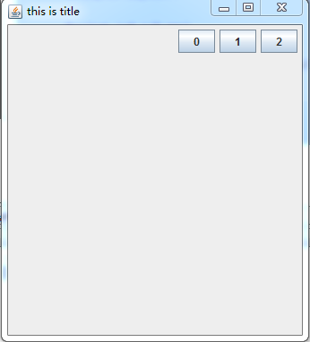
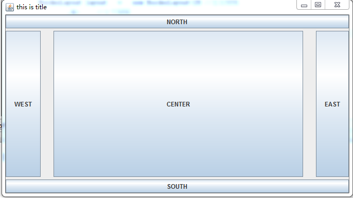
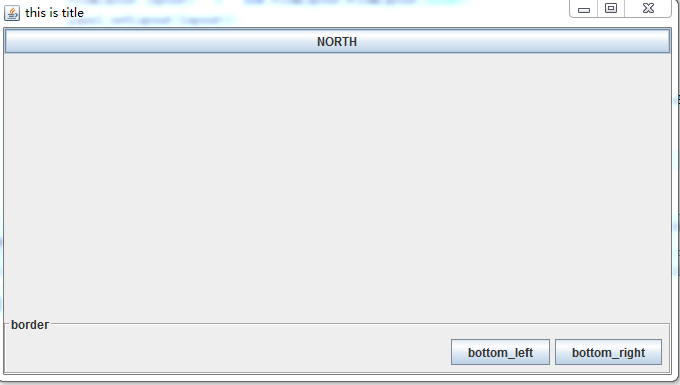
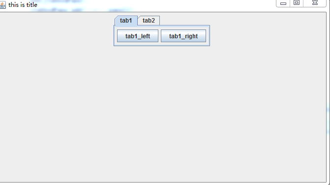

FlowLayout
import java.awt.FlowLayout; FlowLayout 提供了 LEFT CENTER(默認) RIGHT 三種佈局方式 UI隨窗口大小改變而變化
example
class MyPanel extends JPanel
{
public MyPanel(){
FlowLayout layout = new FlowLayout(FlowLayout.RIGHT);
setLayout(layout);
for(int i=0;i<3;++i)
{
add(new JButton(Integer.toString(i)));
}
}
}

注意
FlowLayout 始終 從左到右 排列UI LEFT... 是指定的 全部UI看著整體 排列到窗口的方式
BorderLayout
import java.awt.BorderLayout; BorderLayout 提供了 NORTH(上) NORTH(下) WEST(左) CENTER(中) EAST(右) 五種佈局方式 UI隨窗口大小改變而變化
example
class MyPanel extends JPanel
{
public MyPanel(){
//BorderLayout layout = new BorderLayout();
BorderLayout layout = new BorderLayout(25 //左右間隔
,5); //上下間隔
setLayout(layout);
add(new JButton("NORTH"),BorderLayout.NORTH);
add(new JButton("SOUTH"),BorderLayout.SOUTH);
add(new JButton("WEST"),BorderLayout.WEST);
add(new JButton("EAST"),BorderLayout.EAST);
add(new JButton("CENTER"),BorderLayout.CENTER);
}
}

佈局嵌套 邊框
java 嵌套多個佈局 只需要 將要嵌套的佈局 設置到 一個 JPanel 之後將 JPanel 作為UI add 到需要被嵌套的 JPanel中即可 java 中可以給UI 面板 增加一個邊框 只需要創建 一個邊框 之後使用 組件的setBorder 即可
example
class MyPanel extends JPanel
{
public MyPanel(){
//被嵌套佈局
JPanel panel = new JPanel();
FlowLayout layout1 = new FlowLayout(FlowLayout.RIGHT);
panel.setLayout(layout1);
panel.add(new JButton("bottom_left"));
panel.add(new JButton("bottom_right"));
//為panel增加一個邊框
TitledBorder createTitledBorder = BorderFactory.createTitledBorder(BorderFactory.createEtchedBorder(EtchedBorder.LOWERED));
createTitledBorder = BorderFactory.createTitledBorder(createTitledBorder,"border");
panel.setBorder(createTitledBorder);
//當前佈局
BorderLayout layout = new BorderLayout(25 //左右間隔
,5); //上下間隔
setLayout(layout);
add(new JButton("NORTH"),BorderLayout.NORTH);
add(panel,BorderLayout.SOUTH);
}
}

JTabbedPane
JTabbedPane 同 JPanel 一樣是個控制板 不過 其提供了一個 tab選項頁功能
example
class MyPanel extends JPanel
{
public MyPanel(){
JPanel panel1 = new JPanel();
panel1.add(new JButton("tab1_left"));
panel1.add(new JButton("tab1_right"));
JPanel panel2 = new JPanel();
panel2.add(new JButton("tab2_left"));
panel2.add(new JButton("tab2_right"));
JTabbedPane jTabbedPane = new JTabbedPane();
add(jTabbedPane);
jTabbedPane.add("tab1",panel1);
jTabbedPane.add("tab2",panel2);
}
}
